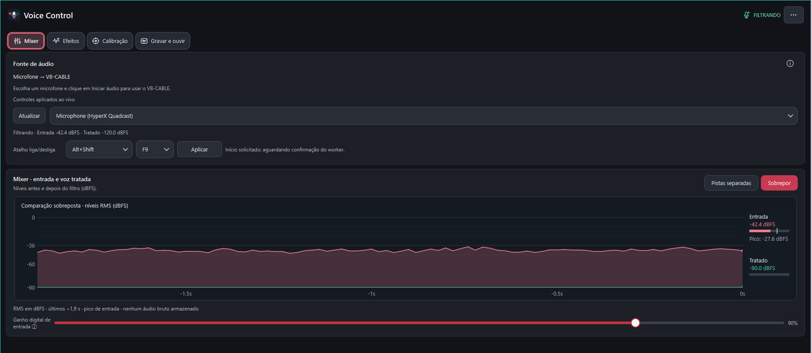
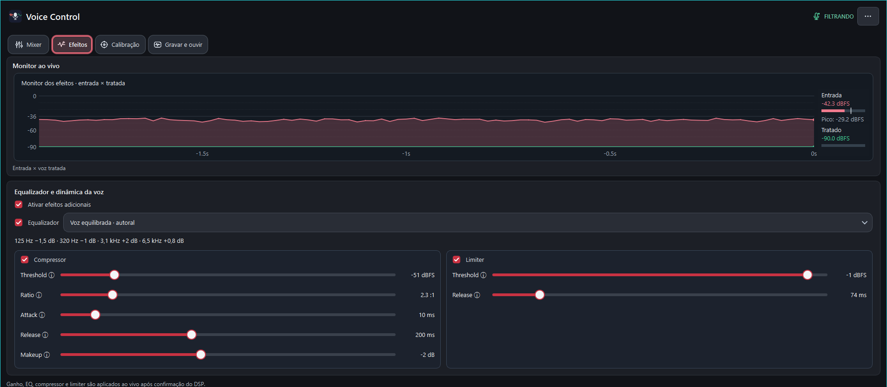

Preparando visualização contextual do projeto…
VOICE CONTROL / PTC 3528 / CAPTURAS REAIS
Do laboratório à interface Windows.
Imagens reais do aplicativo Voice Control versão 0.2.61 em execução durante a preparação da apresentação acadêmica. As capturas mostram controles e indicadores da interface, sem substituir comparações auditivas ou métricas medidas em ensaios controlados.


Capturas obtidas no ASUS em 16/11/2026. Os indicadores gráficos representam a telemetria da interface, não uma validação independente de redução de ruído ou latência ponta a ponta.
01 — O CONTEXTO
O problema que este projeto resolve.
02 / FUNCIONAMENTO
03 / DECISÕES DE ENGENHARIA
Decisões que mudam o resultado.
O que muda na implementação e por que essas decisões importam.